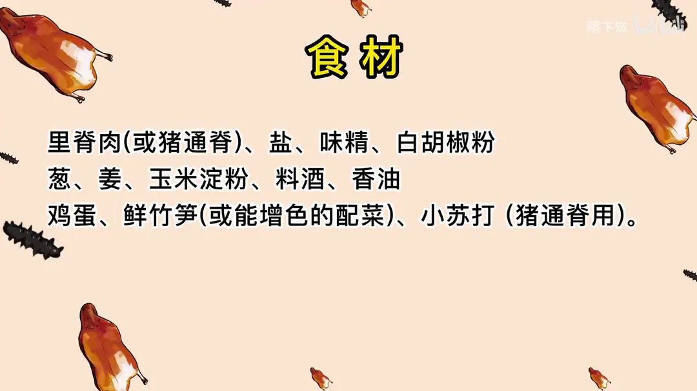
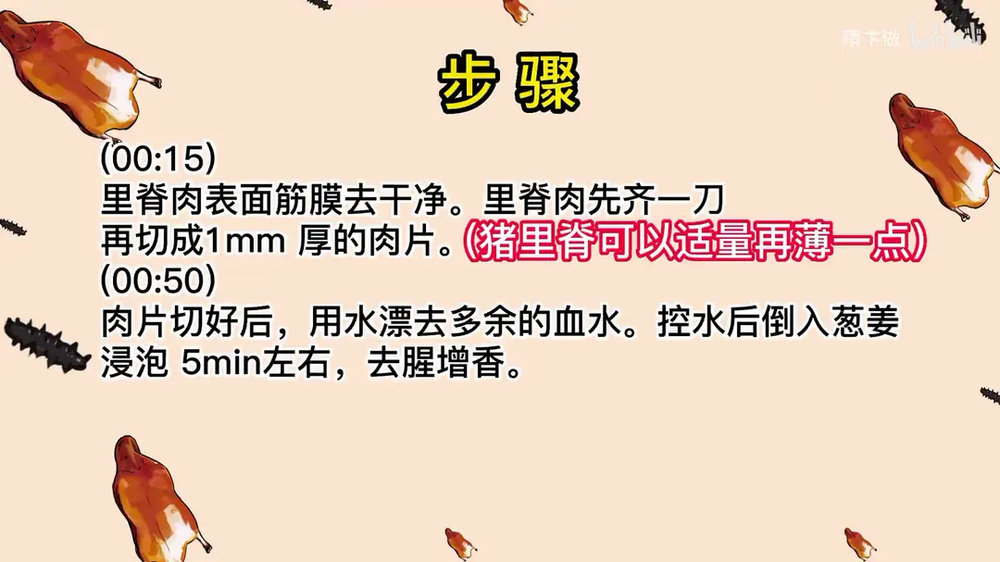
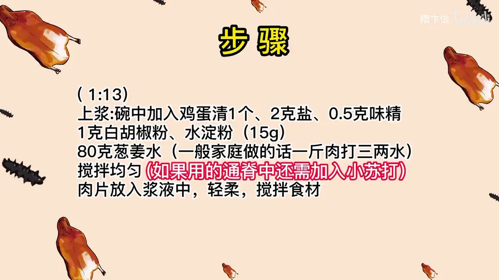
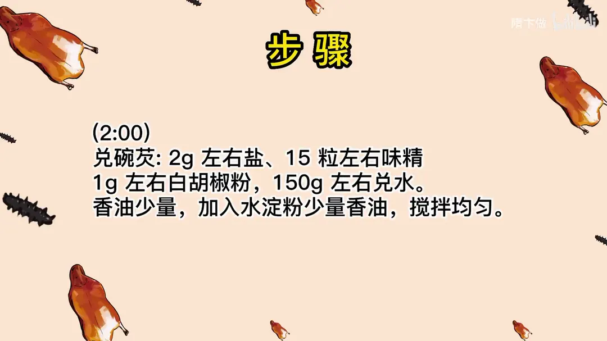
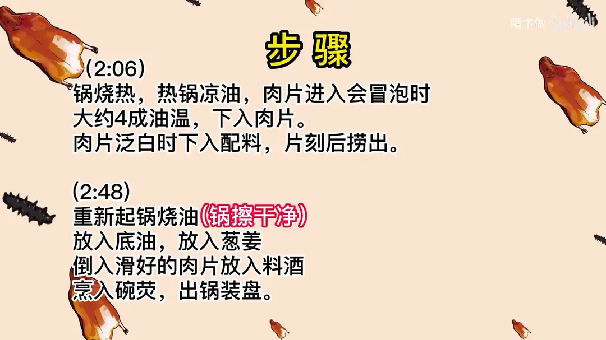
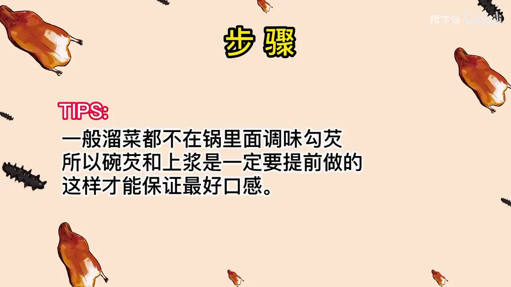

滑溜里脊
隋卞一做。里脊片成 1mm 薄片，用蛋清、15g 水淀粉和 80g 葱姜水上浆，四成油温滑至泛白，下配料片刻捞出，最后烹入提前兑好的碗芡。
原视频：https://www.bilibili.com/video/BV1bs4y1n7Da
食材
里脊肉、盐、味精 等 17 样
| 类别 | 用料 | 用量 |
|---|---|---|
| 主料 | 里脊肉（或猪通脊） | 适量 |
| 上浆 | 鸡蛋清 | 1 个 |
| 上浆 | 盐 | 2g |
| 上浆 | 味精 | 0.5g |
| 上浆 | 白胡椒粉 | 1g |
| 上浆 | 水淀粉（玉米淀粉） | 15g |
| 上浆 | 葱姜水 | 80g |
| 上浆 | 小苏打（用通脊时） | 适量 |
| 碗芡 | 盐 | 2g |
| 碗芡 | 味精 | 15 粒 |
| 碗芡 | 白胡椒粉 | 1g |
| 碗芡 | 水 | 150g |
| 碗芡 | 香油 | 少量 |
| 炒制 | 葱 | 适量 |
| 炒制 | 姜 | 适量 |
| 炒制 | 料酒 | 适量 |
| 配菜 | 鲜竹笋（或能增色的配菜） | 适量 |
步骤
- 切肉：里脊肉表面筋膜去干净，里脊肉先齐一刀，再切成 1mm 厚的肉片，猪里脊可以适量再薄一点。
- 去腥：肉片切好后，用水漂去多余的血水，控水后倒入葱姜浸泡 5 分钟左右，去腥增香。
- 上浆：碗中加入鸡蛋清 1 个、2g 盐、0.5g 味精、1g 白胡椒粉、水淀粉 15g、80g 葱姜水，一般家庭做一斤肉打三两水，搅拌均匀；如果用的通脊中还需加入小苏打，肉片放入浆液中，轻柔搅拌食材。
- 兑碗芡：2g 左右盐、15 粒左右味精、1g 左右白胡椒粉，150g 左右兑水，香油少量，加入水淀粉少量香油，搅拌均匀。
- 滑油：锅烧热，热锅凉油，肉片进入会冒泡时大约四成油温，下入肉片，肉片泛白时下入配料，片刻后捞出。
- 炒制：重新起锅烧油，锅擦干净，放入底油、葱姜，倒入滑好的肉片，放入料酒，烹入碗芡，出锅装盘。
小贴士
- 一般溜菜都不在锅里面调味勾芡，所以碗芡和上浆是一定要提前做的，这样才能保证最好口感。
讲解要点
难度：★★★☆☆（刀工、上浆、油温、火候、汁芡各环节都不能出错，少一个环节成菜就废）
为什么这么做
- 切 1mm 左右薄片、去掉表面筋膜：家常溜肉片要嫩，薄才能一滑就熟；筋膜入口嚼不动、还挂不上浆。通脊比里脊紧实，可以再切薄一点。
- 先漂血水，再用葱姜水泡 5 分钟：血水是腥味来源；葱姜水去腥增香，泡完一定要控净水。
- 一斤肉打三两水、加蛋清和 15g 水淀粉：水让肉嫩，蛋清和水淀粉在表面形成一层膜，滑油时锁住水分、不结硬壳。
- 抓的时候手要轻、浆的浓度要刚好：小里脊太嫩，抓重了肉片会碎；轻轻一晃肉能跟着晃就对了，一坨不动太干，端起边上有水太稀。封一层油，既防干，下锅滑油时肉片也容易散开。
- 四成油温、肉片泛白即下配料，片刻捞出：油温高了表面结痂变硬，就「滑」不起来了。
- 碗芡提前兑好，白胡椒粉最后小火放：溜菜讲究快，锅要擦干净，原料在锅里只颠两三下就出，芡才亮、包得饱满；胡椒粉关小火再下，去腥提鲜又不结疙瘩。
容易翻车
- 上浆没打好，肉片下锅会卷成团，像木耳一样；要看到肉片是舒展的。
- 配料要选能增色的，鲜笋、莴笋片都可以。
热评补充
- 笋片可以换成莴笋，成品很好吃。
原片尾卡






原片文案
AI 字幕校准稿
话不多说，你们要的滑溜里脊来了。我也不知道这个菜哪来那么高的热度，平均每天都收到好几条私信，就说要做这个菜。
这是正经的里脊肉，你们在家用小里脊肉、猪通脊都可以。小里脊基本上就没有筋，很少很少的一点，但是也要把它处理干净，不然入口口感不好、挂不上浆。把表面那点不规整的地方处理一下，刀上一定要抹一点水，开始切肉片。
里脊肉真的还是很嫩的，切多厚呢？基本上在 0.5 毫米到 1 毫米，要是猪通脊就可以切得更薄一点，它那肉比这个里脊肉要紧实。切好的肉放在水里泡一泡，稍微漂一下，去掉多余的血水，然后再重新加葱姜水泡个 5 分钟就行了，要控净水分。
这个就得用上浆的办法：鸡蛋清、盐、葱姜汁儿、味精、白胡椒粉、葱姜水、玉米淀粉，给它打成糊，肉片用干净水之后放在里边慢慢地搅拌。因为我们买的小里脊特别特别的嫩，抓的时候一定要水要少、要轻柔，就用这种按摩的手法，让它每一片肉片表面都挂上淀粉。
这个肉片抓到什么程度呢？你看拿这个一晃，这肉还在晃悠，像这种状态就行了。你要是弄一坨放那儿，晃它都不带动的，那就证明太干了；你要是一端起来边上都是水，就证明太稀了。这个菜呢最关键一定是上浆，浆不好这个菜就做不好。然后上面咱封点油，封油的目的一个是防止干，再一个一会儿下锅滑油的时候，它也容易散开。
咱们再对一碗碗芡，配方放在片尾了。热锅凉油，几成热下呢？肉片放进去起泡就行了。拿筷子轻轻地滑，溜菜讲究滑嫩，滑油的时候表面不容易结痂，一出那硬壳，这个菜就不行了。所以油温一定不能太高，肉片泛白了就可以了，然后把配料倒进去，在油里轻轻划过一下就捞，不能等肉一变老，倒出来。
溜菜要求这锅得很干净，所以咱们把锅一定要处理干净，开火，放入底油，葱姜放进去炒出香味，放入滑好的肉片，烹点料酒，烹入碗芡，好了，出锅装盘。
来吧，兄弟尝尝。这么嫩啊，我感觉我的牙齿都没有工作，一碰就散开了。他真的比我想象的要嫩好多好多。你看这肉片一晃，很颤的。咱们滑好的肉片基本上都是打开的，如果滑出来的肉片都是打卷的，跟木耳一样，那证明你上浆的水打得不够饱满，一滑就抽了，或者上浆没完成好。
这个菜最后一步炒的时候，尽量不要在锅里边调味再勾芡，让原材料在锅里边待的时间越短越好。你看我就颠了两三下立马就出了，所以它这个汁儿还能这么亮，才能把原料包裹得这么饱满；如果你在锅里边调味带勾芡，出来的效果绝对没有这个好看。
都做了那么多期炝锅面、蛋炒饭了，就给你们来一个硬核的。别看滑溜肉片这么小的一道菜，它体现厨师的全面的技术，包括刀工刀法、上浆、油温火候、汁儿芡儿。